En cada foto, los números naranjas marcan dónde tocar, en el mismo orden que los pasos. Los botones pequeños dentro del texto son los mismos que verás en la pantalla.
1. Abrir, entrar y apagar
Doble clic en el acceso De Panas SV del escritorio. Se abre el navegador solo.

- Escribe tu usuario (por ejemplo,
Cesar_01). - Escribe tu contraseña.
- Toca .
| Persona | Usuario | Contraseña inicial | Puede |
|---|---|---|---|
| César | Cesar_01 | DePanas#2026 | Todo, también el Gestor de usuarios (administrador) |
| Marta | Marta_02 | DePanas#2026 | Todo menos el Gestor de usuarios (operadora) |
Cambien estas contraseñas el primer día (ver Usuarios y contraseñas): están escritas en este manual. Respeta mayúsculas y minúsculas al escribirlas.
Al terminar el día, en el menú:
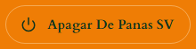
. Cerrar la pestaña del navegador también apaga.Para practicar sin tocar los datos reales, abre Abrir De Panas SV (demo): trae dos meses de compras de ejemplo (53 compras) y guarda todo aparte. Entra con los mismos usuarios.
↑ Volver al índice2. Registrar una compra
Es la pantalla principal, Agregar compra. Lo siguiente aparece a medida que llenas lo anterior.

- Revisa la fecha: empieza en hoy.
- Escribe el proveedor. Si lo que escribes empieza igual que uno guardado, queda marcado y Enter lo completa.
- Escribe el artículo. Solo salen los que vende ese proveedor.
- Pon la cantidad y elige la unidad.
- Revisa el monto: el precio de la última compra se pone solo. Si cambió, escribe el monto o el precio unitario y el otro se calcula.
- Toca
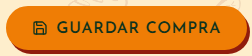
y confirma.
- Otro artículo en la misma compra: .
- Si la factura trae IVA, marca IVA (13 %) antes de guardar.
- Otra compra, por ejemplo de otro proveedor:
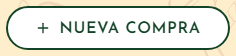
. Cada una se guarda por separado.
3. Un artículo nuevo
Si el artículo no está en el catálogo, toca
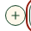
junto a la fila. Se abre este formulario: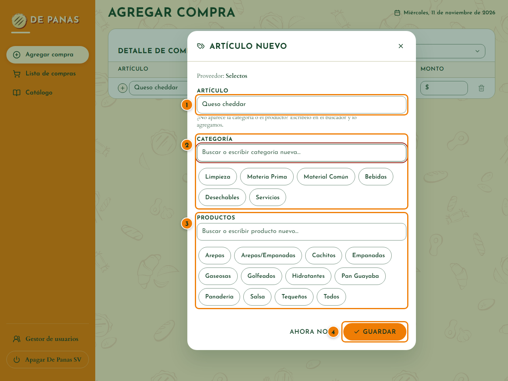
- Revisa el nombre: viene de lo que escribiste en la fila.
- Elige su categoría (por ejemplo, Materia Prima). Si no está, escríbela.
- Elige en qué productos se usa (Arepas, Tequeños…). Es opcional.
- Toca Guardar y confirma. Desde ahora sale en el buscador.
Con la compra se guarda igual y la fila queda marcada en rojo con un «!», para completarlo después. Para corregir un artículo que ya existe, toca el
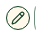
junto a la fila. ↑ Volver al índice4. Lista de compras
Todas las compras, la más reciente arriba. Cuando hay más de 50, se ven de 50 en 50.
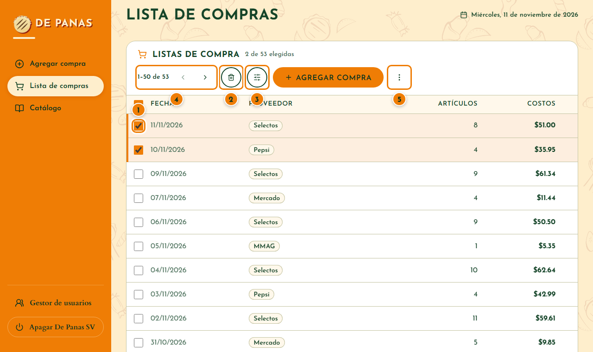
- Elegir compras: marca sus casillas, como en el correo. La casilla de arriba elige las 50 de la página; un aviso ofrece elegir todas.
- Eliminar las elegidas: . Pide confirmar y dice cuántas son.
- Buscar: abre los filtros (proveedor, artículo y fechas).
- Ver las siguientes 50:
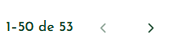
las flechas avanzan o regresan. - Exportar o cargar:
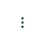
.
Buscar con los filtros
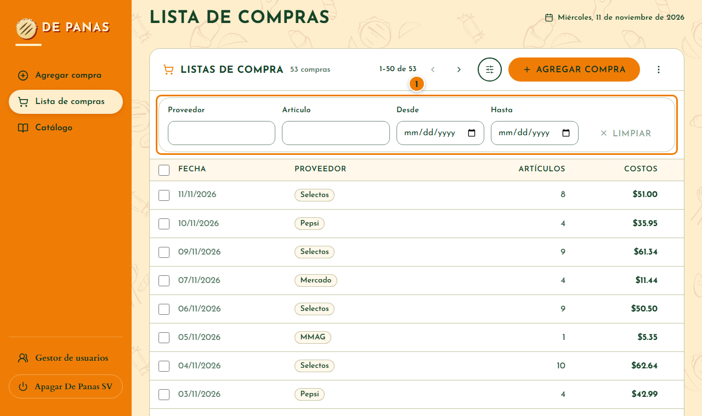
- Escribe el proveedor o el artículo, o elige las fechas. La lista se filtra mientras escribes. Para ver todo otra vez, borra los filtros.
Ver, corregir o eliminar una compra
Toca cualquier parte de su fila. Se abre su detalle:
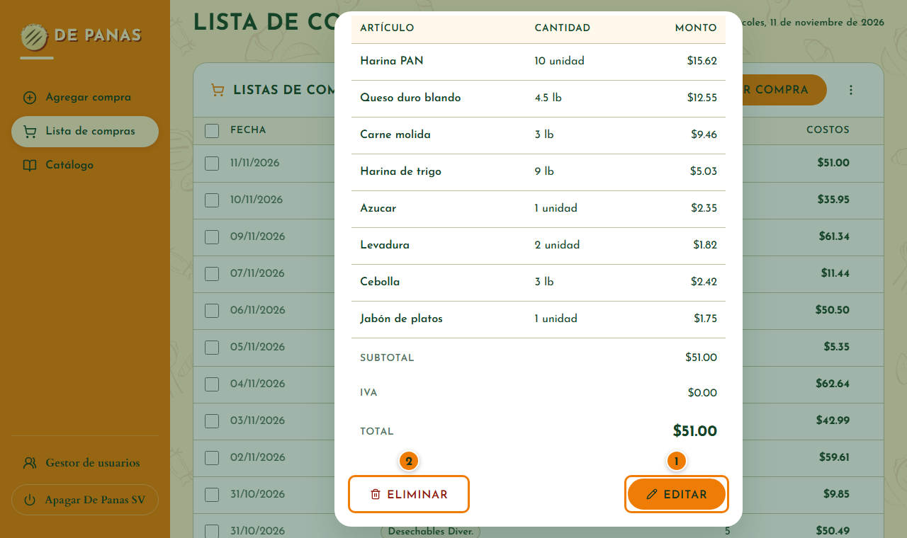
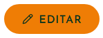
para corregirla. Al terminar, guarda.- Eliminar la borra con todos sus artículos (pide confirmar).
5. Catálogo
Las opciones de los buscadores: proveedores, categorías, artículos y productos.
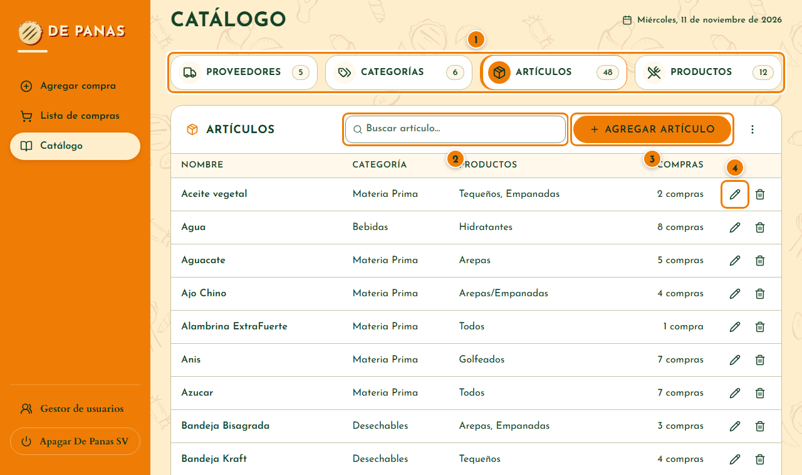
- Elige la sección: Proveedores, Categorías, Artículos o Productos. El número dice cuántos hay.
- Busca por nombre.
- Agrega uno nuevo:
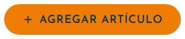
. - Edita con el : cambiar un nombre lo cambia también en todas las compras. La papelera lo elimina; las compras guardadas conservan su texto.
En un proveedor se guardan su ubicación, teléfonos y contactos; en una categoría, qué proveedores la venden (así, al registrar una compra, solo salen sus artículos).
↑ Volver al índice6. Exportar, informes y respaldos
En la Lista de compras: → Exportar datos.
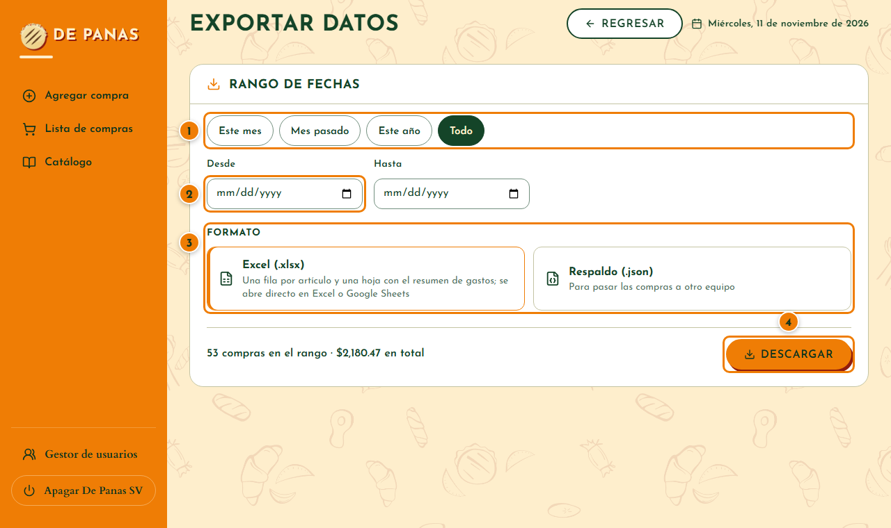
- Elige un rango rápido: Este mes, Mes pasado, Este año o Todo.
- O escribe las fechas Desde y Hasta.
- Elige el formato: Excel para revisar los gastos, o Respaldo (.json) para guardar una copia.
- Toca
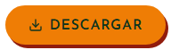
y confirma. El archivo queda en Descargas.
| Formato | Para qué |
|---|---|
| Excel (.xlsx) | Revisar los gastos. Trae una hoja con cada artículo y una hoja Resumen: total, IVA y gasto por proveedor, por categoría y por mes. |
| Respaldo (.json) | Guardar una copia o pasar las compras a otra computadora. |
Informes con ayuda de IA
El Excel sirve para pedirle informes a un asistente de inteligencia artificial (por ejemplo ChatGPT, Claude o Copilot). Sube el archivo y pregunta en tus palabras, por ejemplo:
- «¿En qué categoría gasté más este mes y cuánto subió respecto al mes pasado?»
- «¿Qué artículos subieron de precio en Selectos?»
- «Hazme un resumen de gastos por proveedor en una tabla.»
Al subirlo, el archivo sale de esta computadora y lo recibe ese servicio. Si no quieres compartir el detalle, sube solo la hoja Resumen. Revisa las cifras que te dé la IA contra el Excel antes de decidir.
Cargar un respaldo
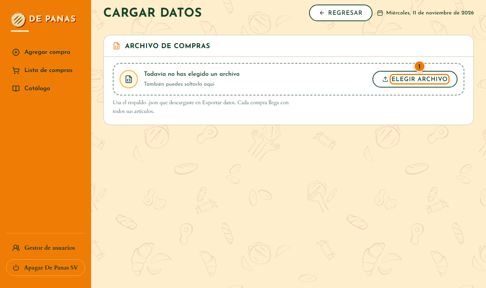
- En la lista: ⋮ → Cargar datos y toca
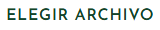
. Elige el respaldo .json, marca las compras que quieres traer y toca Cargar. Las que ya están no se repiten.
Haz un respaldo .json cada mes (rango Todo) y guárdalo en una memoria USB. No lo envíes por correo.
↑ Volver al índice7. Usuarios y contraseñas
Solo el administrador (César) ve el Gestor de usuarios, al pie del menú.
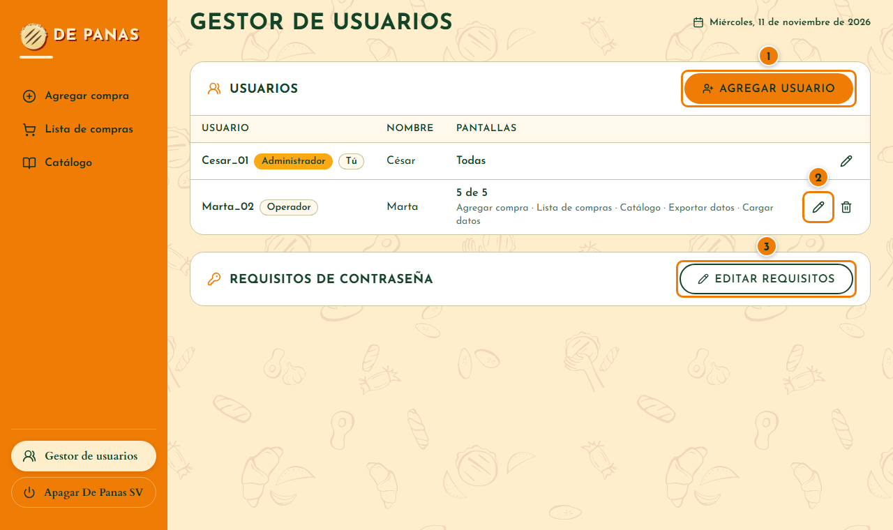
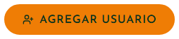
: nombre, usuario, contraseña y rol. El operador puede todo menos el gestor; el empleado, registrar, ver y corregir compras.- Con el se cambian la contraseña, las pantallas y lo que puede hacer cada persona.
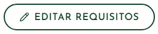
define cómo deben ser las contraseñas nuevas.
Cambiar la contraseña inicial
- César entra con
Cesar_01y abre Gestor de usuarios. - Toca el lápiz de su usuario, escribe la nueva contraseña dos veces y toca Guardar.
- Hace lo mismo con
Marta_02, o se la da a Marta para que la escriba ella.
Cada persona entra con su propio usuario. Por defecto, la contraseña nueva necesita al menos 8 caracteres, una mayúscula, una minúscula, un número y un carácter especial; el formulario marca en vivo lo que falta.
↑ Volver al índice8. Tus datos y su privacidad
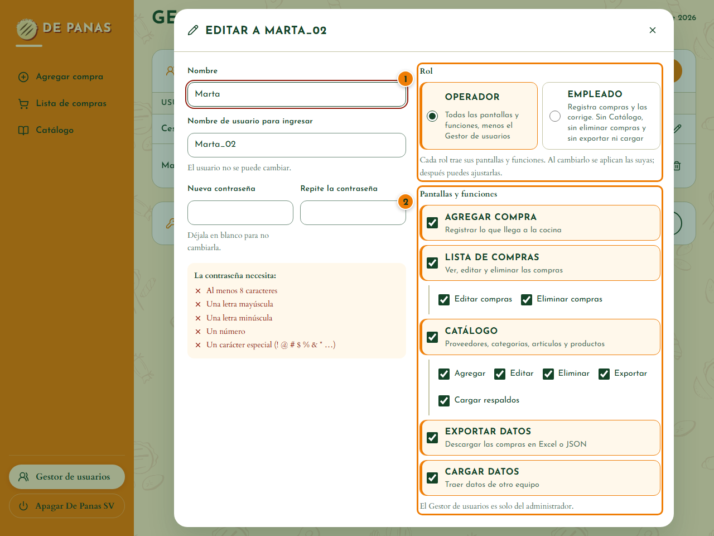
- El rol de cada persona trae lo que puede ver y hacer.
- Las pantallas y funciones se ajustan persona por persona: lo que no está marcado, no lo ve.
| Pregunta | Respuesta |
|---|---|
| ¿Qué guarda? | Las compras (proveedor, fecha, artículos, cantidades y montos), el catálogo con la ficha de cada proveedor (ubicación, teléfonos y contactos) y los usuarios (nombre, usuario y rol). |
| ¿Dónde? | Solo en esta computadora, en la carpeta %APPDATA%\De Panas SV. La demostración usa otra carpeta aparte (demo). |
| ¿Sale algo a internet? | No. No necesita internet, no manda datos a ningún lado y no usa publicidad ni estadísticas. Nadie más en la red puede abrirla. Solo sale lo que tú subas, por ejemplo un Excel a una IA. |
| ¿Y las contraseñas? | No se guardan tal cual: se guarda una huella cifrada que no se puede revertir. Ni el administrador puede ver la contraseña de otro. |
| ¿Cómo los respaldo? | Cada mes, con Exportar. Guarda el archivo en un lugar seguro: trae tus compras completas. |
| ¿Cómo los borro? | Una compra o un dato del catálogo, con Eliminar. Todo: apaga De Panas SV y borra la carpeta %APPDATA%\De Panas SV (no se puede deshacer; respalda antes). |
9. Preguntas frecuentes
¿Necesito internet?
No. Todo funciona y se guarda en esta computadora.
Me equivoqué al guardar una compra. ¿Cómo la corrijo?
En la Lista de compras toca su fila y luego .
No encuentro una compra vieja.
Usa con su proveedor o sus fechas, o avanza con las flechas de arriba: la lista va de 50 en 50.
El artículo no aparece al escribirlo.
Solo salen los artículos de las categorías que vende ese proveedor. Si es nuevo, toca y llena el formulario (ver Un artículo nuevo). Para que un proveedor venda una categoría, edítala en el Catálogo.
Salió un aviso de que hay datos sin guardar.
Tienes una compra a medias. Registrar la guarda; Salir sin guardar la descarta.
Escribí mal la contraseña y no me deja entrar.
Tras 5 intentos fallidos hay que esperar 5 minutos. Si la olvidaste, pide al administrador que te ponga una nueva (ver Usuarios y contraseñas).
Cerré la pestaña sin querer.
El sistema se apagó. Ábrelo otra vez desde el acceso del escritorio; lo guardado no se pierde (ver Abrir, entrar y apagar).
¿Cómo paso los datos a otra computadora?
En la computadora vieja: Exportar → Respaldo (.json), con el rango Todo. En la nueva: ⋮ → Cargar datos y elige ese archivo (ver Exportar, informes y respaldos).
¿Puedo sacar informes de mis gastos?
Sí: el Excel trae una hoja Resumen por proveedor, categoría y mes, y puedes pedirle más informes a una IA (ver Informes con ayuda de IA).
¿Dónde se guardan los datos?
En la carpeta %APPDATA%\De Panas SV. Borrar o reemplazar la carpeta del programa no borra los datos.